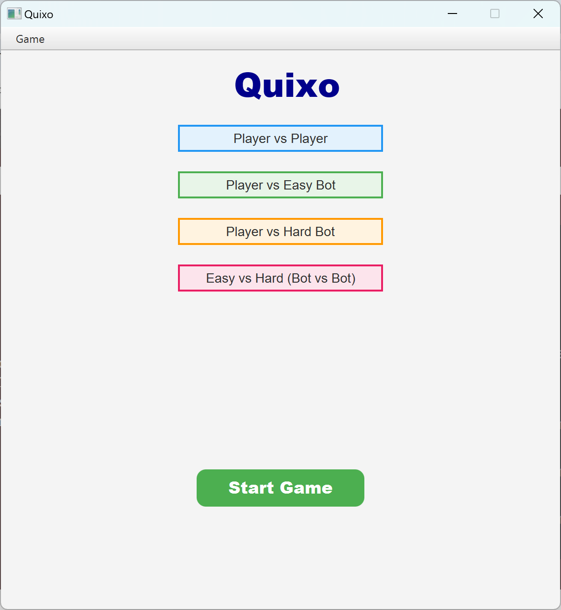
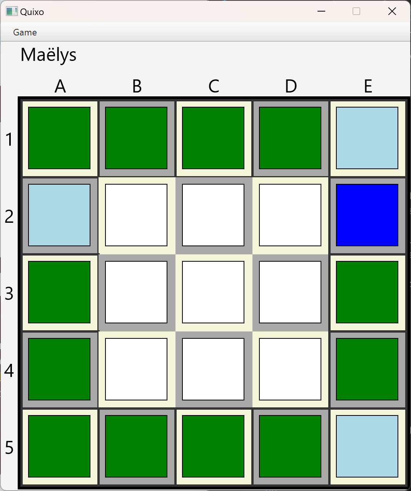
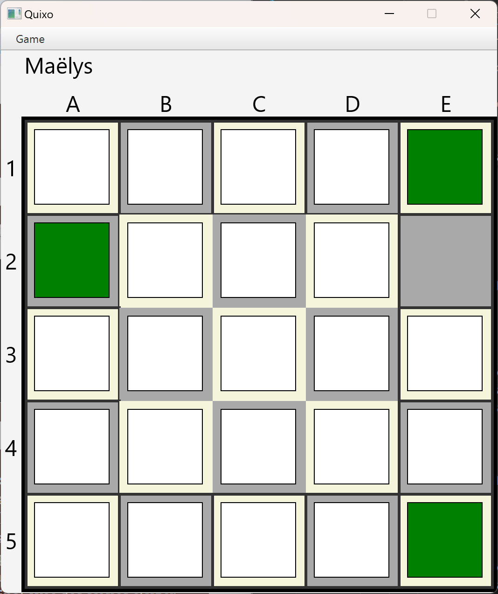

Jeu du Quixo

Ce projet étudiant de groupe a pour objectif de programmer le jeu Quixo en modèle MVC
(modèle qui
partitionne le Modèle, la Vue et le Contrôle du jeu) en Java. Le Quixo
est un jeu en 1 contre 1 sur un plateau de 5x5 où 25 cubes sont posés sur la face Neutre. Les
joueurs ont une marque différente, l’un a les X et l’autre les O. Les joueurs
jouent chacun leur tour et l’objectif est d’aligner 5 cubes de sa face avant l’autre. Lors d’un
tour, le joueur choisit un cube en périphérie du plateau possédant la marque Neutre ou la
sienne. Une fois sélectionné, il enlève le cube, ce qui crée un trou qu’il doit reboucher en le
posant
à un autre endroit en périphérie et en poussant les autres cubes. Si les deux joueurs alignent,
suite au même coup, 5 de leurs faces respectives, c’est le joueur qui a joué le coup qui perd.

Lorsque le jeu est lancé, le joueur choisit son mode (Joueur vs Joueur, Joueur vs
Ordinateur ou Ordinateur vs Ordinateur).
Nous avons implémenté deux ordinateurs de difficultés différentes qu’il est possible d’affronter. Si
au moins un joueur est présent, il inscrit son nom et le jeu démarre.

Comme dit précédemment, la première phase de jeu demande au joueur de sélectionner un cube en
périphérie valable (de sa marque ou sans marque). Ensuite, le jeu affiche les coordonnées jouables
pour la seconde phase en les surlignant en vert (comme illustré sur l’image). Une fois qu’une case
valable est choisie, le jeu est mis à jour et c’est au tour du joueur suivant.

Lorsqu’un des joueurs a aligné 5 dés de sa marque, le jeu s’arrête et désigne le vainqueur. Une
deuxième partie est en cours de développement avec pour objectif de faire fonctionner ce jeu non pas
dans un terminal avec des saisies clavier, mais avec une fenêtre graphique et des clics en guise
de commandes.